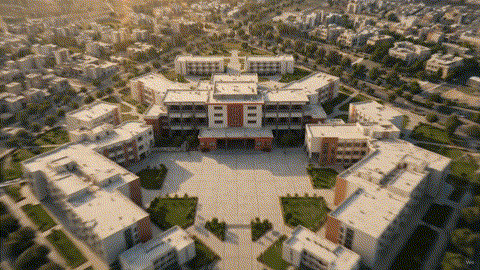

The Vision That
Sparked a Legacy
PaulMUN was founded in 2013 by patron Mr. Benny Vaz, built on early ideas from Anas Ahtesham and Alexander Robinson, to cultivate public speaking, diplomacy and leadership among St. Paul’s students. What began as a single conference has grown, edition by edition, into one of the school’s most enduring traditions.
PaulMUN I was led by founding Secretary-General Aaron Alexander — the first of many Paulians to take the podium and set the standard for every edition that followed.
